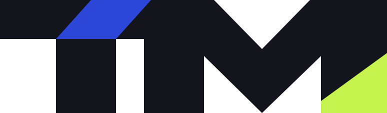
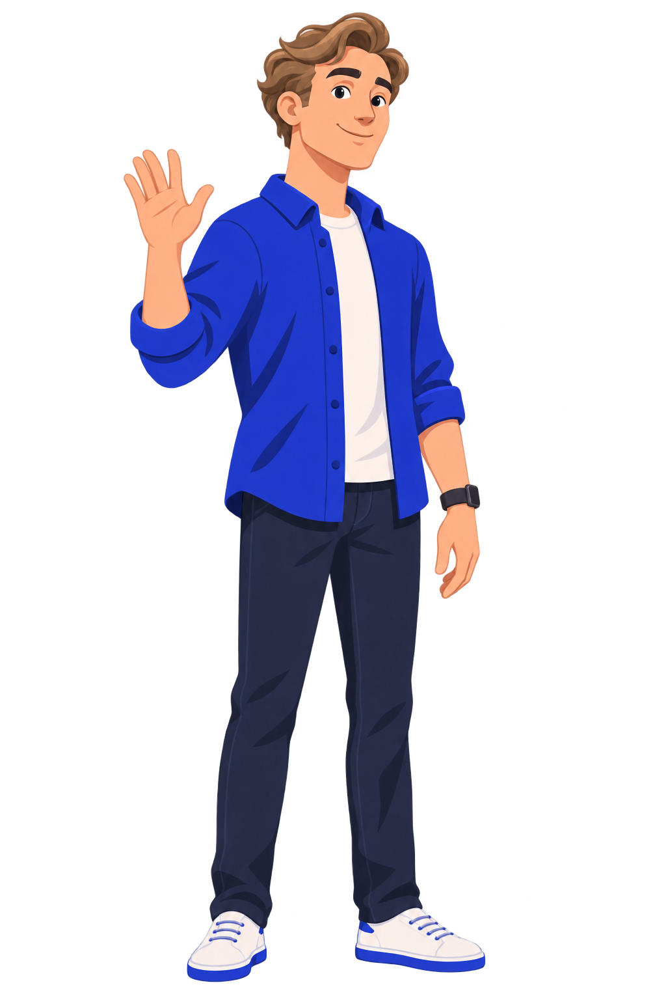
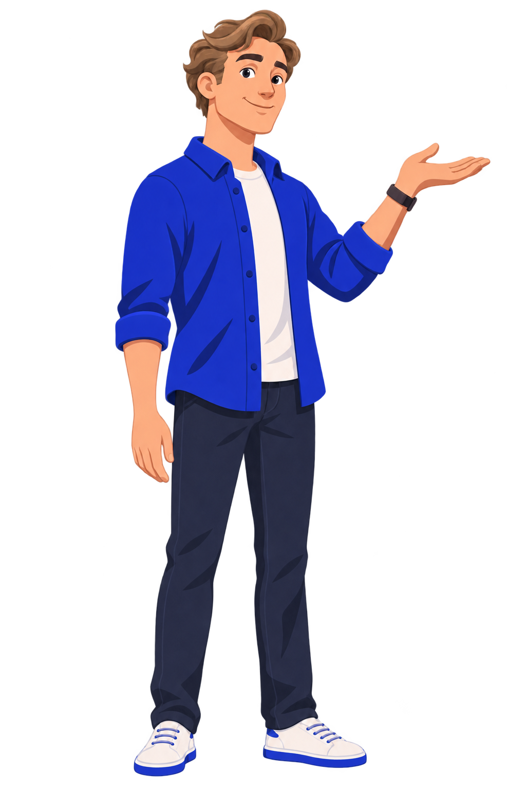
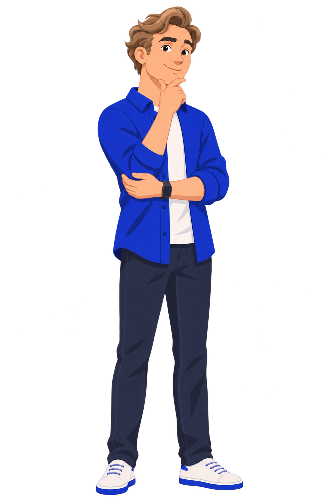
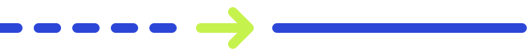
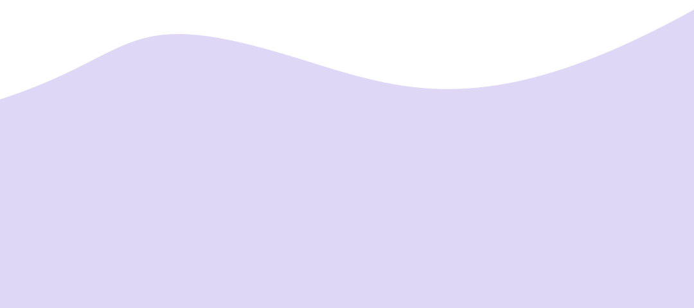

Полное название
На лендинге, обложках и в шапке продукта. Это собственные SVG-контуры, а не набор текста похожим шрифтом.
Минимальная ширина — 180 px. Охранное поле — половина высоты прописной буквы. Пропорции и геометрию сохраняем.
Единый визуальный язык
Бренд, интерфейс и обучение говорят на одном языке: спокойная среда, ясная структура и практика с объяснением.
ТВОЙ МЕНТОР помогает QA-специалисту оценить навыки и выбрать следующий шаг. Говорим как коллега: на «ты», спокойно, конкретно, с объяснением причины.
На лендинге, обложках и в шапке продукта. Это собственные SVG-контуры, а не набор текста похожим шрифтом.
Минимальная ширина — 180 px. Охранное поле — половина высоты прописной буквы. Пропорции и геометрию сохраняем.

Аватар и компактные самостоятельные применения. Минимальная ширина — 32 px. Не ставим ТМ рядом с полным названием в одном блоке.
Синий штрих первой Т равен ширине ножки. Лаймовый участок остаётся в М. Не добавляем второй штрих.
Готовый инверсный SVG. Без фильтров, добавленной обводки, градиента и теней. Цветная и одноцветная версии находятся в пакете.
«Понять, где ты сейчас»
Вместо давления — понятное начало.
«Почему этот шаг»
Вместо скрытого алгоритма — причина.
«Что получилось и что повторить»
Вместо ярлыка — наблюдаемый результат.
Не обещаем трудоустройство, грейд, сертификат или результат за фиксированный срок.
Базовые цвета — из канала 2.0. Семантические цвета ошибок, успеха и тёмной темы — из действующей продуктовой системы. Lime работает как заливка с тёмным текстом, а не как мелкий текст на светлом фоне.
#F9F6EFСреда#14151CТекст и действие#2C46D8Структура и выбор#DED7F5Объяснение#C6F24EСледующий шаг#FFFFFFПоверхность| Роль | Светлая тема | Тёмная тема | Применение |
|---|---|---|---|
| bg | #F9F6EF | #0E0F14 | Фон страницы |
| surface | #FFFFFF | #181A22 | Карточки и поля |
| text / muted | #14151C / #5A5D68 | #EEF0EA / #A3A7B5 | Основной и вторичный текст |
| accent | #2C46D8 | #8EA2FF | Ссылки, фокус, выбор |
| lilac | #DED7F5 | #302C49 | Подложка объяснения |
| lime | #C6F24E | #C6F24E | Только с Ink, небольшой смысловой акцент |
| error | #B3261E | #FF8A80 | Ошибка с текстовым объяснением |
| success | #157A4A | #5CC593 | Успешное действие, не подтверждённый грейд |
Onest, 900
Выразительный hero с плотным набором. Заголовок остаётся настоящим HTML-текстом. Никаких встроенных в картинку обещаний или кнопок.
Основной текст — 16 px с интервалом 1.6. Объяснение рядом с действием должно читаться без увеличения.
JetBrains Mono — код и технические данные. Обычные подписи остаются в Onest.
| Стиль | Desktop | Mobile 360 | Вес / интервал |
|---|---|---|---|
| Hero | 49–72 px | 42–45 px | 900 / 1.08 |
| Заголовок раздела | 32–48 px | 32–34 px | 850 / 1.08 |
| Заголовок карточки | 20–23 px | 18–20 px | 750 / 1.3 |
| Основной текст | 16 px | 16 px | 400 / 1.6 |
| Подпись | 12–14 px | 12–14 px | 400–600 / 1.6 |
| Код | 13–14 px | 13–14 px | 500 / 1.7 |
Используем оригинальные прозрачные PNG. Не меняем внешность, одежду, пропорции и стилизацию. Не зеркалим пробор и часы. Не обрезаем кисть объясняющей руки.

Знакомство и начало
Пояснение принципа
Вопрос и самопроверка
В бренде — путь к ясности через практику. В данных навыка — строго по семантике: оценка, подтверждено, цель. Скролл страницы не повышает уровень.

Волна поддерживает композицию, не перекрывая текст. Лучи внимания — часть исходников канала; в продукте не превращаем лайм в декоративную россыпь.
На лендинге маскот появляется возле объяснения маршрута. Главную роль на первом экране сохраняет метафора продукта.
Это HTML-образцы для согласования. При переносе в приложение расширяем существующие Button, Card, Badge и Notice из packages/ui, а не создаём второй набор компонентов.
Одна заливная главная кнопка на экран. Остальное — вторичные и текстовые действия. Минимальная область нажатия — 44 × 44 px.
role="status" для новых фоновых результатов, role="alert" для актуальной ошибки. Статические образцы не озвучиваем как новые события.
Как выбрать проверки около границ и объяснить свой выбор.
Перейти к материалам ↗У карточки — понятное название, краткая польза и один путь перехода. Вложенных интерактивных элементов внутри ссылки нет.
Цифры — условный пример. Цвет повторяет смысл, а текст и форма передают его самостоятельно.
Переключи состояние одного компонента. Это локальная демонстрация, запросов к API нет. Кнопка повтора показывает успешный образец.
Граничные значения. Пример загруженного плана.
Наведение и фокус — 160–200 мс. Появление блока — 600–700 мс, смещение до 22 px. Движение без изменения размеров текста.
Компоненты и правила публичного сайта: Cream, Ink, Cobalt, Lilac и Lime; Onest для текста и заголовков, JetBrains Mono для кода. Развитие приложения ведётся отдельно.